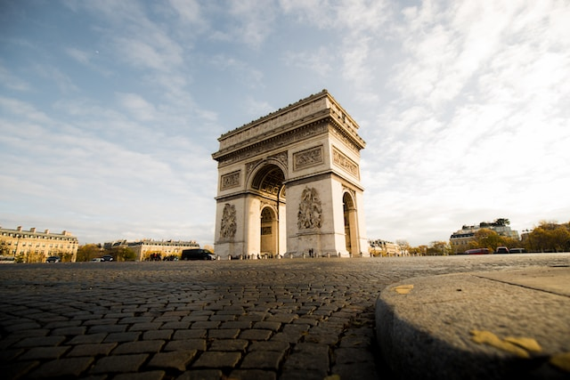
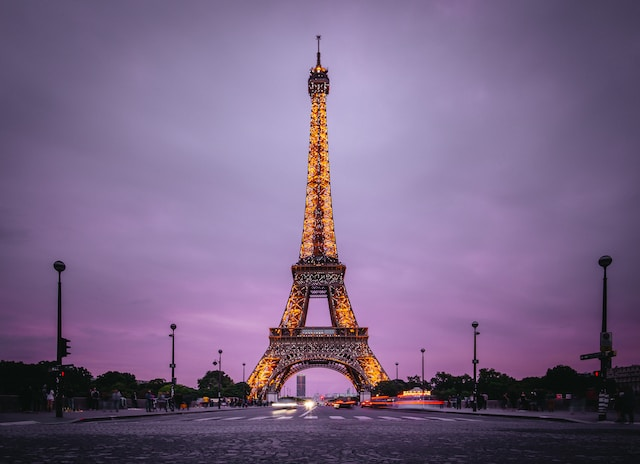
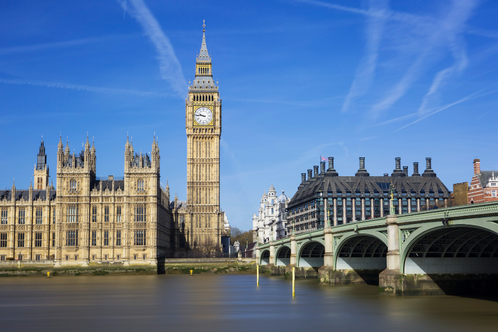

Locais para visitar:
Arco do Triunfo Paris
Monumento de 50 metros de altura, localizado na praça Charles de Gaulle, em Paris. Representa as vitórias do exército francês sob as ordens de Napoleão.

Torre Eiffel - Paris
Símbolo de Paris, é a estrutura mais alta da cidade com 330 metros de altura. Foi construída para a Exposição Universal de 1889 e é o monumento pago mais visitado do mundo.

Big Ben - Londres
Relógio mais famoso do mundo, localizado na torre do Palácio de Westminster, em Londres. Tem 96 metros de altura e suas badaladas são transmitidas pela BBC.